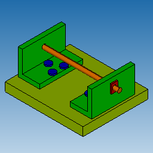
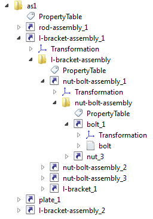

The ModelData_Model class encapsulates a data structure which eventually contains entire information on the 3D model. ModelData_Model contains a product structure, or a hierarchy of elements, often called a scene graph.
The model object is used by readers and writers when converting across supported formats, for instance:
Product structure is provided via a graph that describes hierarchical relationship between the elements.
The graph (often called a 'scene graph') supports the following element types (which are subclasses of ModelData_SceneGraphElement):
Below is an example of an assembly named "as1" (STEP file can be downloaded from here) and its graph. Assemblies are shown with the folder icon (e.g. l-bracket-assembly), instances - with the arrow icons (e.g. nut-bolt-assembly_1), parts - with the sheet-like icons (e.g. bolt).

Assembly |

Scene graph of an assembly model |
This example will be referred to when explaining concepts of the data model.
The following code demonstrates creation of a graph:
Part (ModelData_Part) is a leaf node in a graph, corresponding to a mechanical part. A part is something logically undivisible (in the context of application). A part refers to representations (see Part representations) which define geometrical shape of the part. Depending on an input format the part may have precise geometrical representation (B-Rep) and/or an approximated polygonal one.
The following picture demonstrates a bolt part from the assembly as1:
Assembly (ModelData_Assembly) is a group which contains zero, one or more graph elements, including nested sub-assemblies.
The following picture demonstrates the nut-bolt-assembly from the assembly as1. The nut-bolt-assembly includes two parts - bolt and nut.
Assembly may refer to associated properties.
Instance (ModelData_Instance) is a particular occurence of some element (part or assembly). Instances allow to share elements and to associate individual attributes (e.g. colors) and transformation matrices.
The following picture demonstrates the l-bracket-assembly, which includes a single l-bracket part (in green) and three instances of the nut-bolt-assembly, each with different transformation matrix.
Each graph element can be assigned a name, which is a Unicode string:
A graph element may also refer to:
Parts and (sub-)assemblies may be shared between assemblies. For instance, in the example above, the "nut-bolt-assembly" is used three times by the "l-bracket-assembly".
Sharing is enabled by using unique instances which refer to the same shared element and have unique transformation matrices and names, for instance:
Instances shall always be unique and shall never be shared.
The product structure can be traversed using two approaches:
Iterators support a Java-style interface.
The root elements of the graph can be traversed as follows:
To traverse the assembly children the iterator can be used as follows:
The graph implements the visitor pattern, and even more specifically the hierarchical visitor pattern.
Each graph element (part, assembly, instance) accepts a visitor which must be a subclass of an abstract class ModelData_Model::ElementVisitor with redefined methods to visit respective element type. The element invokes respective visitor's methods and (recursively) sends the visitor to nested elements. This mechanism ensures visiting of entire graph or a sub-tree starting with some particular element.
The following example demonstrates how to count types of all elements in the graph:
If the redefined VisitEnter() method returns false then the respective assembly or instance will not be visited, i.e. assembly's children or instance's referred element will be skipped.
Traversal may start at any element in the hierarchy. For instance, to count the number of children and the element itself the above visitor can be used as follows:
To reduce the amount of user code to be created, the data model offers a few helper classes:
It's possible to remove instances from an assembly and roots from the model itself, using ModelData_Assembly::RemoveInstance and ModelData_Model::RemoveRoot. The removal should be performed outside of any process of traversal over the parent of the removed object (either using ModelData_Model::ElementIterator or using ModelData_Model::ElementVisitor). If the removal is performed during traversal, the behavior is undefined.
The recommended approach is to first traverse the model and record all the removals that are needed. Then to traverse the container of these records and actually remove the items. For example, if could remove all assembly children with name remove_me as follows:
Data model contents must meet certain requirements in order to ensure correct processing by CAD Exchanger. Key requirements are documented below:
Product structure must meet the following requirements: